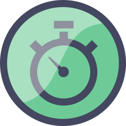
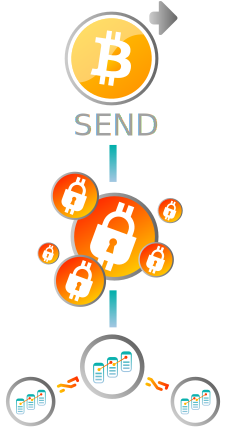
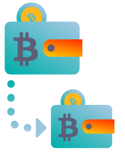

MENU
TRANSFERENCIAS
El Crypto Store trae a la Argentina una manera rápida y sencilla de enviar dinero a todo el mundo. Con sus Bitcoins usted puede enviar dinero a cualquier persona en el mundo que tenga acceso a internet sin importar donde se encuentre y sin la necesidad de poseer una cuenta bancaria.
Disfrute y aproveche los beneficios de la red de pagos Bitcoin para enviar o recibir dinero:

Disfrute y aproveche los beneficios de la red de pagos Bitcoin para enviar o recibir dinero:
sin riesgos

al instante
desde/hacia todo el mundo
sin costos bancarios abusivos y
sin perder en el tipo de cambio.
¿Qué es una transferencia de Bitcoin?

CERRAR

¿Qué es una transferencia de Bitcoin?
Las Transferencias en Bitcoins son mensajes, como un email, que se firman digitalmente usando técnicas de criptografía y se envían a la red Bitcoin para su verificación.
Cuando usted realiza una transferencia en Bitcoins, la misma necesita ser aprobada por la red antes de considerarla completada. El Sistema Bitcoin utiliza un standard de 6 niveles de confirmaciones antes de poder considerar a una transferencia como ejecutada.
Una vez que la información de la transacción es confirmada (esto quiere decir confirmar que efectivamente posee el Bitcoin que quiere enviar y que no lo haya “gastado” previamente), la transferencia se incluye en un “bloque” de transacciones que se adjunta de manera correlativa al “bloque” previo (como una cadena, de ahí viene el nombre de Block-Chain para esta tecnología). Por eso las transferencias en Bitcoins no se pueden deshacer ni se pueden manipular, porque significaría rehacer todos los bloques sucesivos que se añadieron después.
Cuando usted realiza una transferencia en Bitcoins, la misma necesita ser aprobada por la red antes de considerarla completada. El Sistema Bitcoin utiliza un standard de 6 niveles de confirmaciones antes de poder considerar a una transferencia como ejecutada.
Una vez que la información de la transacción es confirmada (esto quiere decir confirmar que efectivamente posee el Bitcoin que quiere enviar y que no lo haya “gastado” previamente), la transferencia se incluye en un “bloque” de transacciones que se adjunta de manera correlativa al “bloque” previo (como una cadena, de ahí viene el nombre de Block-Chain para esta tecnología). Por eso las transferencias en Bitcoins no se pueden deshacer ni se pueden manipular, porque significaría rehacer todos los bloques sucesivos que se añadieron después.
¿Cuánto tarda una transferencia de Bitcoin?
CERRAR


¿Cuánto tarda una transferencia de Bitcoin?
Cuánto tarda una transferencia de Bitcoins depende del momento en que se ejecuta la operación. En este momento se tarda un promedio de 78 minutos en enviar y recibir los fondos de una billetera a otra, sin importar en que lugar del mundo se encuentren.
Hemos visto días de 1,118 minutos como así también días en los que se requerían 32 minutos para verificar una transferencia. Cuantas más transacciones la red tiene que procesar, más se tardan en confirmar las transferencias.
Hemos visto días de 1,118 minutos como así también días en los que se requerían 32 minutos para verificar una transferencia. Cuantas más transacciones la red tiene que procesar, más se tardan en confirmar las transferencias.
¿Cómo transferir Bitcoin?
CERRAR
¿Cómo transferir Bitcoin?
Visítenos en Recoleta, conozca a su crypto-asesor y este le presentará todas las alternativas, opciones y modalidades disponibles para enviar y recibir dinero con Bitcoin, Ethereum y otras Cryptomonedas.
Solo necesita crear su Perfil Operativo (un proceso que no demora más de cinco minutos) para que le entreguemos su PIN Transaccional y Clave personal para empezar enviar y recibir dinero a todo el mundo de inmediato.
Solo necesita crear su Perfil Operativo (un proceso que no demora más de cinco minutos) para que le entreguemos su PIN Transaccional y Clave personal para empezar enviar y recibir dinero a todo el mundo de inmediato.
UNDER LICENSE GRANTED BY AMERICAN EXCHANGE FINANCIAL SERVICES LLC.
© 2018 - ALL RIGHTS RESERVED
© 2018 - ALL RIGHTS RESERVED